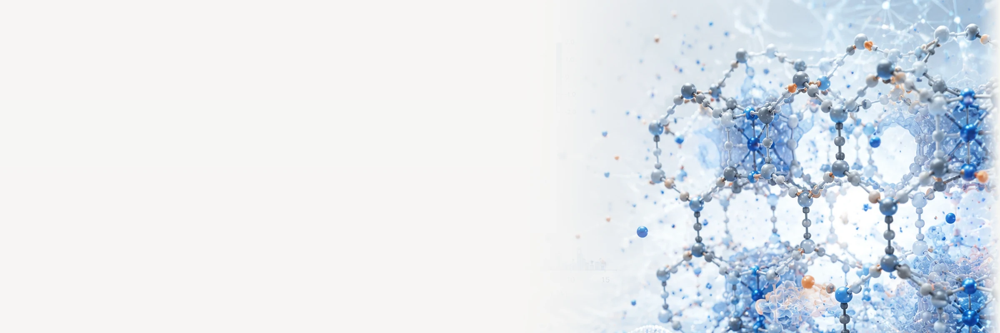

We combine state-of-the-art atomistic simulations, statistical mechanics, and artificial intelligence to link atomistic phenomena to macroscopic performance in energy, environment, and industrial applications.
원자/양자 시뮬레이션, 통계열역학, 인공지능으로 나노스케일의 물리/화학 현상과 거시계의 성능을 연결합니다.
01
디지털 소재 인텔리전스
High-throughput workflows (CoRE MOF Tools, AIM) that curate, screen and evaluate thousands of nanoporous materials as digital twins.
02
소재·화학을 위한 데이터와 AI
Foundational platforms (CoRE MOF DB, PACMAN, MOFClassifier, GWP-estimator) for autonomous discovery of next-generation materials.
03
나노스케일의 확산·흡착·반응
Fundamentals of adsorption, diffusion and reaction mechanisms for carbon capture, conversion, and energy storage.
{{ yg.year }}
{{ item.month }}
{{ pg.year }}
{{ p.journal }}